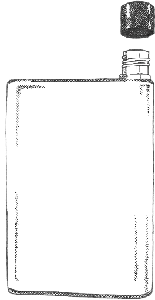
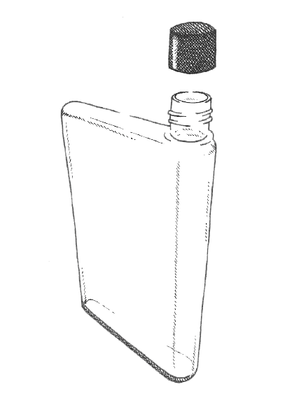
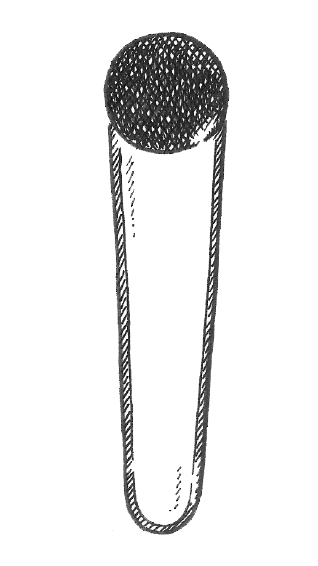

<!DOCTYPE html>
<html lang="da">

<head>
    <meta charset="utf-8">
    <meta name="viewport" content="width=device-width, initial-scale=1.0">
    <title>Vandret</title>
    <link rel="stylesheet" href="style.css">
    <link href="https://fonts.googleapis.com/css?family=Montserrat:100,300,400,400i,500,600,700,800,900" rel="stylesheet">
    <link rel="stylesheet" href="https://cdnjs.cloudflare.com/ajax/libs/font-awesome/4.7.0/css/font-awesome.min.css">
    <link href="video/6/js-image-slider.css" rel="stylesheet" type="text/css" />
    <script src="video/6/mcVideoPlugin.js" type="text/javascript"></script>
    <script src="video/6/js-image-slider.js" type="text/javascript"></script>

</head>

<body>
    <header>
        <section id="header-top"><a href="https://www.linkedin.com/company/vandret/" target="_blank"></a><a href="https://www.facebook.com/vandretflasker" target="_blank"></a><a href="https://www.instagram.com/vandretflasker/" target="_blank"></a><a href=""></a></section>
        <div class="topnav" id="navbar">
            <a href="#forside" class="active">Forside</a>
            <a href="omos.html">Om os</a>
            <a href="#produkt">Produkt</a>
            <a href="#shop">Shop</a>
            <a href="kontakt.html">Kontakt</a>
            <a href="javascript:void(0);" class="icon" onclick="menuFunction()">
                <i class="fa fa-bars"></i></a>
        </div>
        <section id="SoMe" class="top">
            <p id="SoMe_tx">Flasker! Op til 25% Rabat ved første køb<a href="#" class="button">SHOP</a></p>
        </section>
    </header>
    <main>
        <section id="video_bg">
            <video autoplay muted loop id="myVideo">
  <source src="video/Drink.mp4" type="video/mp4">
  Your browser does not support HTML5 video.
</video>

            <div class="content">
                <h1>Vandret Vandflasker </h1>
                <p>Genbrugelige flade flasker, som passer i din taske, står og ligger stabilt, samt hjælper med at reducere plastikspild! </p>
                <button id="myBtn" onclick="myFunction()">SHOP</button>
            </div>


        </section>
        <section id="omflasken">
            <div class="container" style="margin-top:5%;">
                <div id="sliderFrame">
                    <div id="slider">
                        <video preload="none" content="Forsikring, Billig, Studerende, Yndlings" data-image="img/video_img_01.jpg" controls>
            <source data-src="video/Drink.mp4" type="video/mp4" />
            <source data-src="video/mcvideo.ogg" type="video/ogg" />
        </video>
                        <video preload="none" content="Forsikring, Billig, Studerende, Yndlings" data-image="img/video_img_02.jpg" controls>
            <source data-src="video/Drink.mp4" type="video/mp4" />
            <source data-src="video/mcvideo.ogg" type="video/ogg" />
        </video>
                        <video preload="none" content="Forsikring, Billig, Studerende, Yndlings" data-image="img/video_img_03.jpg" controls>
            <source data-src="video/Drink.mp4" type="video/mp4" />
            <source data-src="video/mcvideo.ogg" type="video/ogg" />
        </video>
                    </div>
                </div>
                <div class="omtekst">
                    <h1>Ideen bag flasken</h1>
                    <p>Idéen om at udbrede den flade vandflaske, opstod i mødet med de problematikker vi oplevede med den klassiske drikkedunk - pladsmangel på skrivebordet, rod i tasken, den grimme engangsflaske og den dårlige samvittighed ved at smide plastik ud. Derfor blev VANDRET etableret i 2017, med en vision om at gøre det mere attraktivt at benytte en genbrugelig flaske med funktion i fokus og design for øjet.</p>
                </div>
            </div>
        </section>
        <section id="design">

            <div id="design_left">
                <h1>Design</h1>
                <p>Der er lagt fokus på produktets minimalistiske og stilrene udseende. Den fås kun i ét udtryk - gennemsigtig med hvidt logo på låget. Flasken er designet med det ergonomiske udbytte i fokus, således, at den føles rar at have i hånden. Produktet har altså en god smagsmæssig kvalitet. </p>
            </div>
            <!-- Slideshow container -->
            <div class="slideshow-container">
                <!-- Full-width images with number and caption text -->
                <div class="mySlides fade">
                    
                </div>
                <div class="mySlides fade">
                    
                </div>
                <div class="mySlides fade">
                    
                </div>

            </div>


        </section>
        <section id="info">
            <div class="container_3fr">
                <div id="bpa">
                    
                    <p>(We cut to the garage, where Marty is listening.) (v.o) When are you coming home? The dance! I'll get home when I get home! (He enters the garage.) (Marty hides in the back of the car.)</p>
                </div>
                <div id="frost">
                    
                    <p>(We cut to the garage, where Marty is listening.) (v.o) When are you coming home? The dance! I'll get home when I get home! (He enters the garage.) (Marty hides in the back of the car.)</p>
                </div>
                <div id="dryp">
                    
                    <p>(We cut to the garage, where Marty is listening.) (v.o) When are you coming home? The dance! I'll get home when I get home! (He enters the garage.) (Marty hides in the back of the car.)</p>
                </div>
            </div>
        </section>
        <section id="koeb">
            <div class="container">
                <div id="flaske-left">
                    <div id="pris_small">
                        <h3>320 ml</h3>
                        <a href="#" class="button">119 kr.</a>
                    </div>
                    <div id="koeb_button">
                        <a href="#" class="button">SHOP HER</a></div>
                    <div id="small">
                        <div id="bottlewater">
                            <div id="bottlewater_sprite" class="bottlewater_walkcycle">
                            </div>
                        </div>
                    </div>
                </div>
                <div id="flaske-right">
                    <div id="pris_big">
                        <h3>470 ml</h3>
                        <a href="#" class="button">139 kr.</a>
                    </div>
                    <div id="big">
                        <div id="flaskevand">
                            <div id="flaskevand_sprite" class="flaskevand_walkcycle">
                            </div>
                        </div>
                    </div>
                </div>
            </div>
            <p id="koeb_tx">Se på shop siden for at få flere detaljer angående køb.</p>
        </section>
        <section id="insta">
            <div class="container"></div>
        </section>
        <section id="review">
            <h1 class="center">Review fra kunderne</h1>
            <div class="container">
                <p id="left">No, I'm not talking about George McFly. I'm talking about his kid. (In the background, a car lands outside the Cafe.) Your old man, Marty McFly Senior, the man who took his life and flushed it completely down the toilet. I did? (covering) Uh, I mean, I mean he did? (The cafe doors open and Griff enters. Griff is Biff's grandson, and he's even meaner than Biff was in 1955. Griff is wearing tough-guy clothes and a grey, metallic hat.) Hey Gramps, I told you 2 coats of wax on my car, not just 1. (gets up) Hey, hey, I just put the 2nd coat on last week.</p>
                <p id="right">Holy shit! Hey Doc! Clayton Ravine was named after a teacher. They say she fell in there a hundred years ago. A hundred years ago! That's this year! Every kid in school knows that story because we all have teachers we'd like to see fall into the ravine. Great Scott! (he stops his horse) Then she was supposed to go over in that wagon...and now, I may have seriously altered history. Look, Doc, what's the worst that could happen, huh? So they don't name the ravine after her. Let's just get the Delorean ready and get the hell out of here.</p>
            </div>
        </section>
    </main>
    <footer>
        <div class="container">
            <div id="kontaktinfo"></div>
            <div id="siderne"></div>
            <div id="nyhedsbrev"></div>
        </div>
        <div id="bottom-footer">
            <p>@VANDRET VANDFLASKER SIDEN 2017</p>
        </div>
    </footer>
    <script src="https://ajax.googleapis.com/ajax/libs/jquery/1.12.4/jquery.min.js"></script>
    <script src="java.js"></script>
    <!--
<script>
    var video = document.getElementById("myVideo");
    var btn = document.getElementById("myBtn");

    function myFunction() {
        if (video.paused) {
            video.play();
            btn.innerHTML = "Pause";
        } else {
            video.pause();
            btn.innerHTML = "Play";
        }
    }
</script>
-->
</body>

</html>
